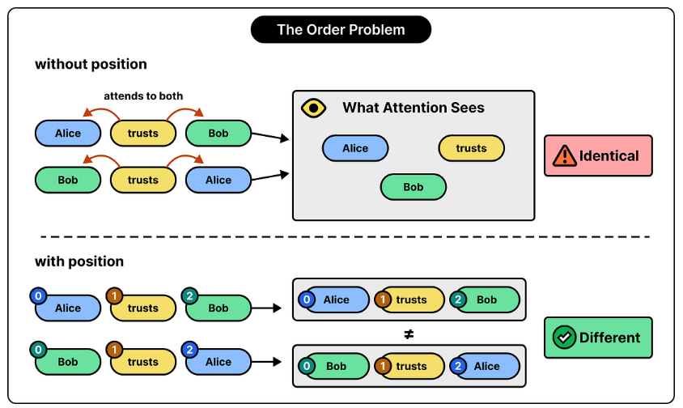
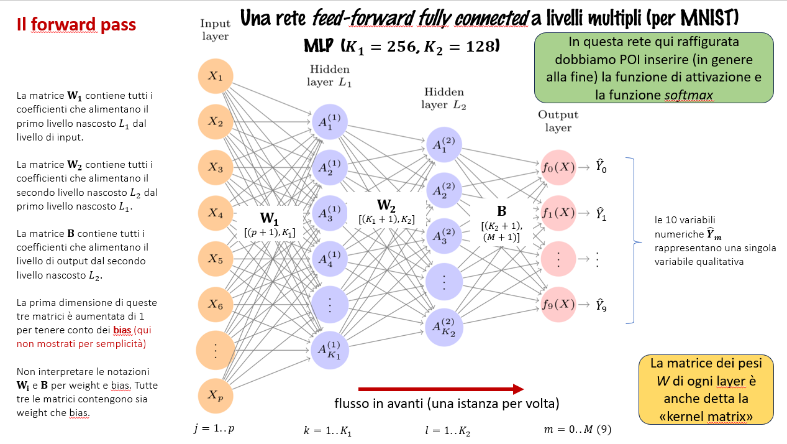
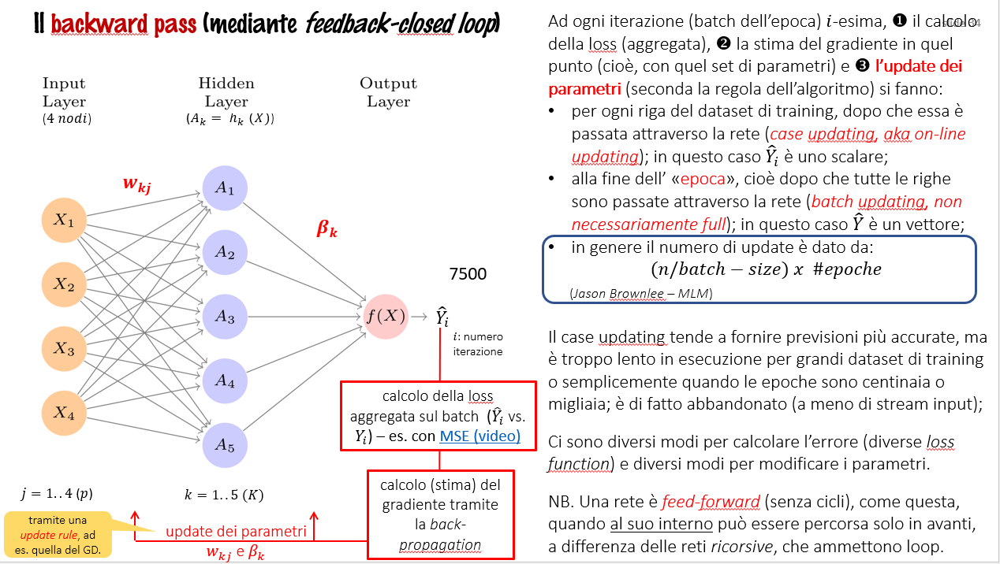
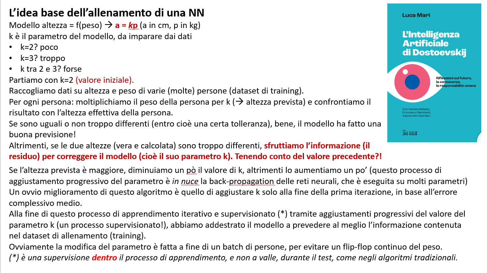

from importlib.metadata import version
print("torch version:", version("torch"))Nascondere le parole successive con l’attenzione causale
Il meccanismo della attenzione
> Copyright Antonio Piemontese 2026 (inspired to Sebastian Raschka’s work).
TO-DO: - dove inserire questa bella immagine presa dal PDF ByteByteGo Newsletter - How the Math Used in 19th-Century Heat Physics Helps LLMs Understand Sentences.pdf:

Questo capitolo tratta: * le ragioni per l’utilizzo di meccanismi di attenzione nelle reti neurali * un framework di base per l’auto-attenzione ed un meccanismo di auto-attenzione migliorato (basato sul primo) * un modulo di attenzione causale che consente agli LLM di generare un token alla volta * il mascheramento di pesi di attenzione selezionati casualmente con dropout per ridurre il sovradattamento (overfitting), * l’impilamento di più moduli di attenzione causale in un modulo di attenzione multi-testa.
🧩 Gli “innesti gpt-oss” (convenzione introdotta nel notebook 2)
Nell’agosto 2025 OpenAI ha rilasciato gpt-oss-120b e gpt-oss-20b, i suoi primi modelli open-weight (cioè “a pesi aperti”: i pesi sono liberamente scaricabili e utilizzabili, con licenza Apache 2.0) dopo GPT-2.
Le celle come questa — su sfondo azzurro e contrassegnate dal simbolo 🧩 — sono innesti gpt-oss: nei punti di contatto con il programma del corso, anticipano come cambia in gpt-oss il concetto appena studiato su GPT-2. Sono letture a margine: il filo del corso resta GPT-2, e il confronto completo sarà sviluppato nel modulo dedicato a gpt-oss (notebook 8).
Questo capitolo sull’attenzione è quello con più punti di contatto: gli innesti sono elencati nella panoramica poco più avanti.
Legenda delle icone (standard) usate nel notebook:
👉 punto di attenzione, il “succo”
📌 nota / inizio di una nota
📦 punto elenco importante
📊 dati/numeri
🔹 punto elenco normale
⭐ punto elenco importante
✅ punto risolto, positivo
❌ punto negativo, da evitare
⚠️ attenzione, warning, allarme
💡 idea chiave
🧠 idea intuitiva
📝 sintesi / bottom-line
⟶ conseguenza, effetto, passo successivo
Il meccanismo della attenzione e la sua codifica
Package usati in questo notebook:
Questo notebook tratta i meccanismi dell’attenzione, il cuore degli LLM, come descritto nella figura seguente:

La figura successiva rappresenta i differenti meccanismi di attenzione che illustreremo e implementeremo in questo notebook: * una versione semplificata dell’auto-attenzione (self-attention) senza pesi allenabili * la versione con i pesi allenabili * l’auto-attenzione causale, tramite una maschera, aggiunta alla auto-attenzione, che le permette di generare una parola per volta * la attenzione multi-head, che permette organizza il meccanismo della auto-attenzione in “head” multipli, permettendo al modello di catturare vari aspetti del testo in parallelo

🧩 E in gpt-oss? — Panoramica del capitolo
I quattro meccanismi della figura qui sopra restano i mattoni fondamentali anche di gpt-oss: li costruiremo tutti, e tutti sopravvivono nel modello di OpenAI. gpt-oss però aggiunge quattro novità sopra questa base, ognuna segnalata più avanti da un innesto 🧩 nel punto giusto del capitolo:
🔹 RoPE — le posizioni entrano ruotando query e chiave (innesto nella sezione sull’auto-attenzione con pesi allenabili);
🔹 GQA (Grouped Query Attention) — meno teste chiave/valore che teste di query (innesto nella sezione multi-head);
🔹 finestra scorrevole alternata — in un layer su due la maschera causale diventa anche “a banda” (innesto nella sezione sull’attenzione causale);
🔹 attention sinks — un “posto di parcheggio” appreso per l’attenzione (innesto in chiusura della sezione multi-head).
In più, una sottrazione: il dropout sull’attenzione, che qui studiamo, in gpt-oss non c’è più (innesto nella sezione dedicata).
La modellazione delle sequenze lunghe
Questo capitolo introduttivo illustra diversi concetti fondamentali, e non ha perciò codice.
Il punto chiave: non è possibile tradurre un testo parola per parola a causa delle differenze nelle strutture grammaticali tra lingua di origine e lingua di arrivo.
La frase di esempio che usiamo in tedesco ed inglese è: “Mi puoi aiutare a tradurre questa frase?”

Lo stato dell’arte nella traduzione linguistica automatica, PRIMA dell’introduzione nel 2017 dei modelli transformer (in italiano: “trasformatori”), era costituito dalle reti neurali ricorsive (RNN) di tipo encoder-decoder.
In quella architettura, l’encoder processava una sequenza di token della lingua di origine, usando uno hidden state, cioè una specie di livello (layer) intermedio dentro la rete neurale, ogni nodo del quale memorizzava l’intero input. In questo modo la RNN encoder-decoder riusciva a generare una rappresentazione compatta dell’intera sequenza di input. Vedi in proposito la seguente figura.

Catturare le dipendenze nel testo con i meccanismi dell’attenzione
Le RNN traducono bene frasi brevi, ma non frasi lunghe. Esse infatti devono memorizzare l’intera sequenza in ogni singolo stato nascosto.
Un miglioramento, introdotto nel 2014 e chiamato attenzione di Bahdanau, ha in parte superato questo problema.
Con il meccanismo dell’attenzione di Bahdanau, il segmento di decodifica (decoder segment) della rete che genera il testo è in grado di accedere selettivamente a tutti i token di input, il che implica che: > alcuni token di input abbiano più importanza di altri nella generazione di uno specifico token di output.
Vedi in proposito la seguente figura.

Basandosi sul’attenzione di Bahdanau i ricercatori di Google nel 2017 - nel celeberrimo articolo “Attention is all you need* - hanno introdotto i trasformatori (transformer), particolari reti neurali profonde dotate del meccanismo della self-attention (auto-attenzione).
L’auto-attenzione dei trasformatori, che sarà trattata nel prossimo capitolo, è una tecnica progettata per migliorare le rappresentazioni di input.
La chiave sta nel consentire a ciascuna posizione in una sequenza di determinare la rilevanza di ogni altra posizione all’interno della stessa sequenza, ed interagire con questa rilevanza.
Il “self” nella “self-attention” si riferisce alla capacità del meccanismo di calcolare i pesi dell’attenzione correlando diverse posizioni all’interno di una singola sequenza di input. Essa valuta e apprende le relazioni e le dipendenze tra varie parti dell’input stesso, come le parole in una frase o i pixel in un’immagine. Questo è in contrasto con i meccanismi di attenzione tradizionali, in cui l’attenzione è focalizzata sulle relazioni tra **elementi di due sequenze diverse*, come nei modelli sequenza-sequenza in cui l’attenzione potrebbe essere concentrata tra una sequenza di input e una sequenza di output, come nell’esempio illustrato nella figura 3.5.
Prestare attenzione alle diverse parti dell’input con auto-attenzione
La seguente figura colloca il presente notebook nel contesto generale del corso.

Un semplice meccanismo di “auto-attenzione” senza pesi allenabili
Questo capitolo, per iniziare, spiega una variante molto semplificata dell’auto-attenzione, che non contiene alcun peso allenabile. E’ presentata puramente a scopo illustrativo, NON è il meccanismo di attenzione che viene utilizzato nei transformer.
Il prossimo capitolo estenderà questo semplice meccanismo di attenzione ed implementerà il vero meccanismo di autoattenzione (con i pesi allenabili).
Supponiamo di avere una sequenza di input testuale, da \(x^{(1)}\) a \(x^{(T)}\).
La sequenza sia la seguente frase: “Your journey starts with one step” - “Il tuo viaggio inizia con un passo”) che sia già stata convertita in embedding di token di dimensione d, come descritto nel notebook precedente. Qui, \(T=6\).
Per esempio sia \(d=3\), cioè \(x^{(1)}\) è un vettore (embedded) di dimensione \(d=3\). [Usiamo qui una dimensione di embedding molto piccola per facilità espositiva, anche per farla stare in una riga senza ritorni a capo.]. \(x^{(1)}\) rappresenta la parola “Your”.
Obiettivo: calcolare i vettori di contesto \(z^{(i)}\) per ogni elemento della sequenza di input \(x^{(i)}\), da \(x^{(1)}\) a \(x^{(T)}\) (dove \(z\) e \(x\) hanno la stessa dimensione, qui 3).
Un vettore di contesto \(z^{(i)}\) è una somma pesata sugli input da \(x^{(1)}\) sino a \(x^{(T)}\). Lo si può considerare come un vettore embedding arricchito, perchè contiene informazioni su \(x^{(i)}\) e su tutti gli altri input.
Un aspetto chiave degli LLM è infatti comprendere le relazioni tra le parole e la loro rilevanza nel contesto
Consideriamo il secondo input, \(x^{(2)}\), che corrisponde alla parola journey e che costituisce il query token
Il secondo vettore di contesto, \(z^{(2)}\), è una somma pesata su tutti gli input (da \(x^{(1)}\) a \(x^{(T)}\)), pesata rispetto al secondo elemento di input, \(x^{(2)}\), il “query token”.
I pesi di attenzione (attention weights), \(\alpha_{ij}\), sono i pesi che determinano quanto ciascuno degli elementi di input contribuisce alla somma pesata quando si calcola \(z^{(2)}\). In generale, gli attention weights determinano in che misura un vettore di contesto \(z^{(i)}\) dipende dalle varie parti dell’input
Il vettore di contesto, come dice il termine, è quindi specifico del contesto (context-specific) rispetto a un certo input (il query token).
In breve, bisogna pensare a \(z^{(2)}\) come a una versione modificata di \(x^{(2)}\) che incorpora anche informazioni su tutti gli altri elementi di input che sono rilevanti per un certo compito da svolgere.

NB. In questa figura complessiva, che sarà poi suddivisa in 3 passi, i numeri sono troncati a una cifra dopo la virgola per ridurre l’ingombro visivo; analogamente, anche altre figure successive possono contenere valori troncati.
Per convenzione i pesi di attenzione non-normalizzati sono detti attention scores, \(\omega_{ij}\), mentre gli score di attenzione normalizzati, che sommano a 1, sono detti attention weights, \(\alpha_{ij}\).
Il codice delle celle seguenti esegue la figura precedente passo a passo:
passo 1:
Il primo passo consiste nel calcolare gli attention scores non normalizzati \(\omega_{ij}\), tramite il calcolo del prodotto interno tra il query token e tutti gli altri token di input.
- usiamo l’elemento 2 della sequenza di input, \(x^{(2)}\), come query token di esempio, cioè \(q^{(2)} = x^{(2)}\), e vogliamo calcolare il vettore di contesto \(z^{(2)}\); più avanti in questo capitolo generalizzeremo per calcolare tutti i vettori di contesto. calcoliamo gli attention score non-normalizzati con il prodotto interno dell’algebra lineare (“dot product”):
- \(\omega_{21} = x^{(1)} q^{(2)\top}\)
- \(\omega_{22} = x^{(2)} q^{(2)\top}\)
- \(\omega_{23} = x^{(3)} q^{(2)\top}\)
- …
- \(\omega_{2T} = x^{(T)} q^{(2)\top}\)
- \(\omega\), come detto, è la lettera greca “omega” che si usa per indicare gli attention scores non normalizzati
- Il pedice \(_{21}\) in \(\omega_{21}\) significa che l’elemento 2 della sequenza di input è stato usato come query sull’elemento 1 (della sequenza di input)
La nostra frase è costituita dalla seguente sequenza di input - già embedded in vettori 3-dimensionali, come imparato nel notebook precedente:
import torch
inputs = torch.tensor(
[[0.43, 0.15, 0.89], # Your (x^1)
[0.55, 0.87, 0.66], # journey (x^2)
[0.57, 0.85, 0.64], # starts (x^3)
[0.22, 0.58, 0.33], # with (x^4)
[0.77, 0.25, 0.10], # one (x^5)
[0.05, 0.80, 0.55]] # step (x^6)
)Questo tensore di input corrisponde alla figura precedente (che arrotondava ad 1 cifra decimale).
“Your jouney starts with one step” –> 6 token di input, rappresentati su 3 dimensioni embedded.
In questo corso, seguiamo la comune convenzione del Machine Learning e Deep learning per la quale gli esempi di addestramento (training samples) sono rappresentati come righe e i valori delle feature (feature values) come colonne; nel caso del tensore mostrato sopra, ogni riga rappresenta una parola e ogni colonna rappresenta una dimensione di embedding)
La domanda chiave: come si calcola il vettore di contesto \(z^{(2)}\)?
La seguente figura illustra la fase iniziale di questo processo, che prevede il calcolo degli attention scores \(\omega\) tra \(x^{(2)}\) e tutti gli altri elementi di input tramite un’operazione di prodotto scalare.

query = inputs[1] # il secondo token di input è la query (meglio, il query token)
attn_scores_2 = torch.empty(inputs.shape[0])
for i, x_i in enumerate(inputs):
attn_scores_2[i] = torch.dot(x_i, query) # prodotto interno (la trasposizione non è necessaria qui perchè sono vettori 1D
print(attn_scores_2)Nota matematica:
Un prodotto interno è essenzialmente un modo abbreviato per indicare la moltiplicazione di due vettori, elemento per elemento, e la somma dei prodotti risultanti.
res = 0.
for idx, element in enumerate(inputs[0]):
res += inputs[0][idx] * query[idx]
print(res)
print(torch.dot(inputs[0], query))Come si vede, le due modalità di calcolo (la moltiplicazione/somma esplicita ed il prodotto interno) hanno ovviamente fornito lo stesso risultato.
Nota fondamentale:
> Il prodotto interno NON è solo uno strumento matematico che combina due vettori per produrre un valore scalare. Il prodotto scalare è una misura di similarità perché quantifica quanto siano allineati due vettori: un prodotto scalare più alto indica un maggiore grado di allineamento o similarità tra i vettori. Nel contesto dei meccanismi di auto-attenzione, il prodotto scalare determina la misura in cui ciascun elemento di una sequenza si concentra, o “presta attenzione”, a un altro elemento: più alto è il prodotto scalare, maggiore è il punteggio di similarità e attenzione tra due elementi.
passo 2: normalizzazione degli attention scores non-normalizzati (\(\omega_{ij}\)), in modo che sommino ad 1 –> attention weights, \(\alpha_{ij}\).
La seguente figura illustra questo secondo passo:

Nella cella seguente è mostrato un semplice modo per normalizzare gli score non-normalizzati ad 1.
attn_weights_2_tmp = attn_scores_2 / attn_scores_2.sum()
print("Attention weights:", attn_weights_2_tmp)
print("Sum:", attn_weights_2_tmp.sum())In pratica, comunque, la prassi più frequente e consigliata per la normalizzazione è l’uso della funzione softmax, che gestisce meglio i valori estremi ed il cui gradiente ha delle proprietà migliori per il training.
Qui sotto si riporta una implementazione naive della funzione softmax per lo scaling, che serve anche a normalizzare gli elementi del vettore per farli sommare ad 1.
def softmax_naive(x):
return torch.exp(x) / torch.exp(x).sum(dim=0)
attn_weights_2_naive = softmax_naive(attn_scores_2)
print("pesi dell'attenzione:", attn_weights_2_naive)
print("somma:", attn_weights_2_naive.sum())Inoltre, grazie alla funzione
softmax, gli attention weights sono sempre positivi e sommabili ad 1, e dunque possono essere interpretati come probabilità o rilevanze relative, dove quindi un attention weight alto significa importanza alta (di quel token nella frase di input).
Una implementazione naive di questo tipo può presentare problemi di instabilità numerica per valori di input grandi o piccoli, a causa di problemi di overflow e underflow. Pertanto, in pratica, si consiglia di utilizzare l’implementazione PyTorch di softmax, che è stata altamente ottimizzata per le prestazioni:
attn_weights_2 = torch.softmax(attn_scores_2, dim=0)
print("Attention weights:", attn_weights_2)
print("Sum:", attn_weights_2.sum())Si è ottenuto lo stesso risultato.
Nota. La normalizzazione è una convenzione, utile per l’interpretazione ma anche importante per la stabilità dell’allenamento.
passo 3: il calcolo del vettore di contesto \(z^{(2)}\) tramite la moltiplicazione dei token di input embedded, \(x^{(i)}\), con gli attention weights e la somma dei vettori risultanti:

query = inputs[1] # il secondo token di input è la query
context_vec_2 = torch.zeros(query.shape)
for i,x_i in enumerate(inputs):
context_vec_2 += attn_weights_2[i]*x_i
print(context_vec_2)Occorre ora generalizzare questa procedura.
Calcolare i pesi dell’attenzione per tutti i token di input
La generalizzazione a tutti i token di sequenza di input.
Abbiamo prima calcolato gli attention weights e il vettore di contesto per l’elemento di input 2, come illustrato dalla riga evidenziata in rosa nella figura sottostante.
Ora, come anticipato al precedente passo 1, generalizziamo la procedura vista prima al calcolo degli attention weights e vettori di contesto per tutti i token di input, simultaneamente:

La seconda riga evidenzia il tensore degli attention weights visti prima. Come detto, ora dobbiamo calcolare le altre righe, cioè gli attention weights relativi agli altri input (ognuno preso come query token). [I token elencati a sx della matrice (in colonna) sono i query token]
A questo scopo, seguiamo gli stessi 3 passi di prima, riassunti dalla seguente figura:

Applichiamo il precedente passo 1 a tutti gli elementi a coppie (pairwise elements) per calcolare la matrice degli attention score non normalizzati (e non più il “vettore”!):
attn_scores = torch.empty(6, 6)
for i, x_i in enumerate(inputs):
for j, x_j in enumerate(inputs):
attn_scores[i, j] = torch.dot(x_i, x_j)
print(attn_scores)Ogni elemento di questo tensore 2D rappresenta l’attention score tra ogni coppia di input (una riga ed una colonna della matrice)..
Come sappiamo, possiamo ottenere lo stesso risultato, ma in modo più efficiente del ciclo for precedente, con la moltiplicazione matriciale, indicata in Python con il simbolo @.
attn_scores = inputs @ inputs.T
print(attn_scores)Stessi risultati di prima.
Applichiamo ora il precedente passo 2, cioè normalizziamo ogni riga così che i valori (di ogni riga) sommino ad 1.
attn_weights = torch.softmax(attn_scores, dim=-1)
print(attn_weights)Sono esattamente i valori della matrice mostrata nella figura precedente (qui con 4 cifre decimali).
In PyTorch, il parametro
dimutlizzato in funzioni cometorch.softmaxspecifica la dimensione del tensore di input lungo la quale verrà calcolata la funzione. Impostando dim=-1, indichiamo alla funzionesoftmaxdi applicare la normalizzazione lungo l’ultima dimensione del tensoreattn_scores. Seattn_scoresè un tensore bidimensionale (ad esempio, con una forma a [righe, colonne]), verrà normalizzato lungo le colonne in modo che i valori in ogni riga (sommando sulla dimensione della colonna) siano pari a 1.
Una rapida verifica che i valori di ogni riga effettivamente ora sommino ad 1:
row_2_sum = sum([0.1385, 0.2379, 0.2333, 0.1240, 0.1082, 0.1581])
print("Somma Riga 2:", row_2_sum)
print("Somma di tutte le righe:", attn_weights.sum(dim=-1))Applichiamo il precedente passo 3 per calcolare tutti i vettori di contesto, cioè - detto meglio - usiamo gli attention weights prima calcolati per calcolare tutti i vettori di contesto con la tecnica della moltiplicazione matriciale.
all_context_vecs = attn_weights @ inputs
print(all_context_vecs)Ogni riga di questo tensore 2D contiene un vettore di contesto embedded anch’esso (d=3).
Come verifica, il vettore di contesto \(z^{(2)} = [0.4419, 0.6515, 0.5683]\), calcolato precedentemente, deve trovarsi nella seconda rioga dell’output precedente, cioè:
print("Precedente secondo vettore di contesto: ", context_vec_2)Si conclude qui l’esame di questo semplice meccanismo di auto-attenzione (senza parametri allenabili).
Implementare l’auto-attenzione con pesi allenabili
Premessa sui pesi allenabili
Un concetto fondamentale per comprendere il funzionamento delle reti neurali:



La figura seguente rappresenta una framework concettuale che illustra come il meccanismo della auto-attenzione (self-attention), descritto e implementato in questo capitolo (cioè con i pesi allenabili), si inserisce nella organizzazione generale del corso.

Calcolare i pesi dell’attenzione passo a passo
In questo capitolo, implementeremo il meccanismo di auto-attenzione (self-attention) che è > utilizzato nell’architettura del trasformatore originale (2017), nei modelli GPT di OpenAI (dal 2019 in poi) e nella maggior parte degli altri LLM più diffusi.
Questo meccanismo di auto-attenzione è anche chiamato “scaled dot-product attention” (traduz. “attenzione col prodotto interno scalato”). Vedremo più avanti da cosa origina questo termine.
L’idea generale è simile a quella precedente: * Vogliamo calcolare i vettori di contesto come somme pesate dei vettori di input e specifici per un determinato elemento di input. * Per quanto sopra, abbiamo bisogno degli attention weights.
Come vedremo, ci sono solo lievi differenze rispetto al meccanismo di attenzione di base introdotto in precedenza: * La differenza più evidente è l’introduzione di matrici dei pesi (weight matrices) che sono aggiornate durante l’allenamento del modello (il training). * Queste matrici dei pesi (allenabili!) sono fondamentali affinché il modello (in particolare, il modulo di attenzione all’interno del modello) possa imparare a produrre “buoni” vettori di contesto.
Implementeremo il meccanismo della self-attention passo a passo; iniziamo con il passo 1, introducendo le tre weight matrices di training, \(W_q\), \(W_k\), and \(W_v\).
Le useremo per proiettare i token di input embedded, \(x^{(i)}\), nei vettori query, chiave e valore attraverso la moltiplicazione matriciale:
- vettore query (solo per il calcolo di \(z^{(i)}\)): $q^{(i)} = x^{(i)},W_q $
dim: [1,2] = $[1,3] x [3,2] $ - vettore chiave: $k^{(i)} = x^{(i)},W_k $
dim: [1,2] = $[1,3] x [3,2] $ - vettore valore: $v^{(i)} = x^{(i)},W_v $
dim: [1,2] = $[1,3] x [3,2] $
Come per la self-attention senza parametri allenabili, anche adesso calcoliamo, come esempio, il vettore di contesto \(z^{(2)}\). Il processo è illustrato nella figura seguente. Poi generalizzeremo il calcolo anche agli altri \(z^{(i)}\).

NOTA: perché i termini query, chiave e valore?
I termini “query”, “chiave” (key) e “valore” (value) nel contesto dei meccanismi di attenzione sono presi in prestito dal dominio della Information Retrieval (recupero delle informazioni) e dei database, dove concetti simili sono utilizzati per archiviare, cercare e recuperare informazioni.
Una query è analoga a una query di ricerca in un database. Rappresenta l’elemento corrente (ad esempio, una parola o un token in una frase) su cui il modello si concentra o che cerca di comprendere. La query viene utilizzata per sondare le altre parti della sequenza di input e determinare quanta attenzione dedicarvi.
La chiave (key) è come una chiave di database utilizzata per l’indicizzazione e la ricerca. Nel meccanismo di attenzione, a ogni elemento nella sequenza di input (ad esempio, a ogni parola in una frase) è associata una chiave. Queste chiavi vengono utilizzate per trovare corrispondenze con la query.
Il valore (value) in questo contesto è simile al valore di una coppia “chiave-valore” in un database. Rappresenta il contenuto effettivo o la rappresentazione degli elementi di input. Una volta che il modello determina quali chiavi (e quindi quali parti dell’input) sono più rilevanti per la query (l’elemento di interesse corrente), recupera i valori corrispondenti.
Punto chiave: come detto, l’autoattenzione utilizza le matrici dei pesi allenabili \(W_q\), \(W_k\) e \(W_v\). Queste matrici trasformano i dati di input rispettivamente in query, chiavi e valori, che sono le componenti cruciali del meccanismo dell’attenzione. Man mano che il modello viene esposto (cioè allenato con) ulteiori dati durante l’allenamento, adatta questi pesi allenabili, come vedremo nei prossimi capitoli.
🧩 E in gpt-oss? — RoPE entra in scena (su query e chiave)
È esattamente qui che agisce RoPE (Rotary Position Embeddings), già incontrato nell’innesto del notebook 2: in gpt-oss, subito dopo aver calcolato q = x·W_q e k = x·W_k, e prima del prodotto interno, i vettori query e chiave vengono ruotati di un angolo che dipende dalla posizione del token nella sequenza. I vettori valore non vengono toccati.
Tutto il resto della pipeline che stiamo costruendo — prodotto interno, scaling, softmax, somma pesata dei valori — resta identico: RoPE è un “intervento chirurgico” su q e k, non una nuova attenzione.
Curiosità controcorrente: nei layer lineari che producono Q, K e V, gpt-oss mantiene il bias (l’argomento qkv_bias che nel corso teniamo a False), mentre molti LLM recenti lo eliminano.
Implementeremo RoPE nel modulo dedicato a gpt-oss.
Le dimensioni di embedding dell’input \(x\) [qui 3] e del vettore di query \(q\) [qui 2] possono essere le stesse o differenti, a seconda del disegno del modello e della sua specifica implementazione.
Nei modelli GPT le dimensioni dell’input e dell’output sono in genere le stesse, ma, per meglio spiegare le computazioni, scegliamo qui dimensioni di embedding differenti (per l’input e l’output).
x_2 = inputs[1] # il secondo elemento di input
d_in = inputs.shape[1] # la dimensione di embedding dell'input, 3
d_out = 2 # la dimensione di embedding dell'output, 2Qui sotto inizializziamo le tre weight matricesin modo casuale (con la funzione torch.rand); si noti che, per chiarezza di illustrazione, impostiamo requires_grad=False per ridurre l’ingombro visivo negli output; se dovessimo usare le weight matrices per allenare il modello, dovremmo impostare requires_grad=True per far modificare queste matrici durante il training.
torch.manual_seed(123)
W_query = torch.nn.Parameter(torch.rand(d_in, d_out), requires_grad=False)
W_key = torch.nn.Parameter(torch.rand(d_in, d_out), requires_grad=False)
W_value = torch.nn.Parameter(torch.rand(d_in, d_out), requires_grad=False)Ora calcoliamo i vettori query, chiave e valore per l’elemento di input corrente (2):
query_2 = x_2 @ W_query # _2 perchè è rispetto al secondo elemento di input
key_2 = x_2 @ W_key
value_2 = x_2 @ W_value
print(query_2)
print(query_2.shape) # un tensore 1D (vettore)
print(key_2)
print(value_2)Nota: Parametri di peso (weight parameters) vs. pesi dell’attenzione (attention weights).
Nelle matrici di peso W, il termine “peso” (weight) è l’abbreviazione di “parametri di peso” (weight parameters), ovvero i valori di una rete neurale che vengono ottimizzati durante l’allenamento. Non devono essere confusi con i pesi dell’attenzione (attention weights). Come abbiamo già visto, i pesi dell’attenzione determinano la misura con cui un vettore di contesto dipende dalle diverse parti dell’input (ovvero, in che misura la rete si concentra su diverse parti dell’input).
> In sintesi, i parametri di peso sono i coefficienti fondamentali appresi (learned) che definiscono le connessioni della rete, mentre i pesi dell’attenzione sono valori dinamici, specifici del contesto.
Ora proiettiamo tutti i 6 token di input (e non solo il secondo) da uno spazio 3D (di origine) ad uno spazio emebbeding 2D (di arrivo) tramite la moltiplicazione del vettore con l’operatore matrice:
keys = inputs @ W_key
values = inputs @ W_value
print(keys)
print(values)
print("dimensioni chiave:", keys.shape)
print("dimensioni valore:", values.shape)Nel prossimo passo 2 calcoliamo gli attention scores non-normalizzati, \(\omega_{ij}\), tramite il prodotto interno tra il vettore query e ogni vettore chiave, come illustrato nella seguente figura e poi nel codice (sempre per l’elemento 2 di esempio):

La figura illustra la differenza chiave della self-attention con parametri allenabili rispetto a quella senza. In quella senza parametri si calcola il prodotto interno della query direttamente con i token di input. In questa (con i parametri) si usa la query e la chiave ottenuti trasformando gli input con le rispettive matrici dei pesi.
Calcoliamo l’attention score \(\omega_{22}\) (quindi non normalizzato):
keys_2 = keys[1] # Python inizia l'indice da 0
attn_score_22 = query_2.dot(keys_2)
print(attn_score_22)Poichè nella nostra frase abbiamo 6 input, abbiamo 6 attention scores per ogni specifico vettore di query (il secondo nell’esempio):
attn_scores_2 = query_2 @ keys.T # TUTTI gli attention scores per una data query, calcolati con la solita
# moltiplicazione matriciale
print(attn_scores_2)Proseguiamo con il passo 3: calcoliamo gli attention weights \(\alpha_{ij}\) (attention scores normalizzati che sommano ad 1), come dalla seguente figura:

Usiamo la funzione softmax che abbiamo usato precedentemente.
La differenza con prima è che ora scaliamo gli attention scores dividendoli per la radice quadrata della dimensione di embedding, \(\sqrt{d_k}\) (i.e., d_k**0.5):
d_k = keys.shape[1]
attn_weights_2 = torch.softmax(attn_scores_2 / d_k**0.5, dim=-1)
print(attn_weights_2)Nota: la logica alla base dell’attenzione con il prodotto interno scalato.
La ragione della normalizzazione con la dimensione embedding visto ora, è quello di migliorare le prestazioni di allenamento evitando i gradienti piccoli. Ad esempio, quando si aumenta la dimensione di embedding, che in genere è maggiore di 1.000 per LLM di tipo GPT, prodotti interni di grandi dimensioni possono generare gradienti molto piccoli, durante la backpropagation, a causa della funzione softmax applicata. All’aumentare del prodotto interno, la funzione softmax si comporta sempre più come una funzione a gradini, con gradienti prossimi allo zero. Questi piccoli gradienti possono rallentare drasticamente l’allenamento o causare il suo ristagno. La scalatura (scaling) in base alla radice quadrata della dimensione di embedding dà il nome a questo meccanismo di auto-attenzione.
🧩 E in gpt-oss? — La formula non cambia
Anche gpt-oss usa esattamente questa scaled dot-product attention: stessi passi, stessa divisione per √dk. Nei modelli gpt-oss la dimensione di ogni testa è dk = head_dim = 64, quindi lo scaling divide per √64 = 8.
Le novità di gpt-oss (RoPE, GQA, finestra scorrevole, attention sinks) si innestano attorno a questa formula, senza toccarla.
Nel passo 4, l’ultimo, calcoliamo il vettore di contesto per il vettore query di input 2.
Nella auto-attenzione senza parametri avevamo calcolato il vettore di contesto come somma pesata dei vettori di input (moltiplicati per la query).
Ora calcoliamo il vettore di contesto come somma pesata dei vettori valore (ottenuti tramite le chiavi) e moltiplicati per la query. Gli attention weights servono come pesi dell’importanza relativa di ogni vettore valore. Come prima, possiamo usare la moltiplicazione matriciale per ottenere il risultato in unico passo.
context_vec_2 = attn_weights_2 @ values # solita moltiplicazione matriciale per ottenere
# l'output in un colpo solo
print(context_vec_2)Gli stessi valori della figura.
Ora non resta che generalizzare il calcolo a tutti i vettori di contesto.
Implementare una class SelfAttention compatta
La seguente figura rappresenta il processo complessivo (4 passi), relativamente all’input 2.

Mettendo tutto insieme in una nuova classe ad hoc possiamo implementare il meccanismo della self-attention nel seguente modo:
import torch.nn as nn
class SelfAttention_v1(nn.Module):
def __init__(self, d_in, d_out):
super().__init__()
self.W_query = nn.Parameter(torch.rand(d_in, d_out))
self.W_key = nn.Parameter(torch.rand(d_in, d_out))
self.W_value = nn.Parameter(torch.rand(d_in, d_out))
def forward(self, x):
keys = x @ self.W_key
queries = x @ self.W_query
values = x @ self.W_value
attn_scores = queries @ keys.T # omega
attn_weights = torch.softmax(
attn_scores / keys.shape[-1]**0.5, dim=-1
)
context_vec = attn_weights @ values
return context_vecSelfAttention_v1 è una classe derivata da nn.Module, un elemento fondamentale dei modelli PyTorch che fornisce le funzionalità necessarie per la creazione e la gestione dei livelli del modello.
Il metodo init inizializza le matrici di peso allenabili (W_query, W_key e W_value) per query, chiavi e valori, ciascuna delle quali trasforma la dimensione di input d_in in una dimensione di output d_out.
Durante il forward pass, utilizzando il metodo forward, calcoliamo i punteggi di attenzione (attn_scores) moltiplicando query e chiavi, e poi normalizzando questi punteggi tramite la funzione softmax.
Infine, creiamo un vettore di contesto pesando i valori con questi punteggi di attenzione normalizzati.
Usiamo questa classe così:
torch.manual_seed(123)
sa_v1 = SelfAttention_v1(d_in, d_out)
print(sa_v1(inputs))Poichè inputs contiene 6 vettori embedded, l’istanziazione della classe risulta in una matrice (tensore 2D) che contiene i 6 vettori di contesto. La seconda riga [0.3061, 0.8210] corrisponde al vettore context_vec_2 del precedente capitolo.
La seguente figura sintetizza il meccanismo completo della self-attention con parametri allenabili.

Possiamo infine ottimizzare la precedente implementazione usando i layer lineari di PyTorch (nn.Linear), che sono equivalenti ad una moltiplicazione matriciale se disabilitiamo le unità bias.
Un altro grande vantaggio dell’uso di nn.Linear, rispetto all’approccio “manuale” della v1 con nn.Parameter(torch.rand(...), è che nn.Linear ha uno schema di inizializzazione dei pesi ottimizzato, che porta ad un training del modello più stabile ed efficace.
class SelfAttention_v2(nn.Module):
def __init__(self, d_in, d_out, qkv_bias=False):
super().__init__()
self.W_query = nn.Linear(d_in, d_out, bias=qkv_bias)
self.W_key = nn.Linear(d_in, d_out, bias=qkv_bias)
self.W_value = nn.Linear(d_in, d_out, bias=qkv_bias)
def forward(self, x):
keys = self.W_key(x)
queries = self.W_query(x)
values = self.W_value(x)
attn_scores = queries @ keys.T
attn_weights = torch.softmax(attn_scores / keys.shape[-1]**0.5, dim=-1)
context_vec = attn_weights @ values
return context_vec
torch.manual_seed(789)
sa_v2 = SelfAttention_v2(d_in, d_out)
print(sa_v2(inputs))Si noti che le due classi SelfAttention_v1 e SelfAttention_v2 forniscono output differenti perchè usano pesi iniziali differenti per le weight matrices.
Vedremo ora, nei prossimi capitoli, due miglioramenti al meccanismo della auto-attenzione: l’integrazione di elementi causali e multi-head. * L’aspetto causale modifica il meccanismo di attenzione per impedire al modello di accedere a informazioni future nella sequenza di input, il che è cruciale per compiti come la modellazione linguistica, in cui ogni previsione di parola deve dipendere solo dalle parole precedenti. * La componente multi-head suddivide il meccanismo di attenzione in più “head”. Ogni “head” apprende diversi aspetti dei dati, consentendo al modello di prestare attenzione simultaneamente a informazioni provenienti da diversi sottospazi di rappresentazione in posizioni diverse. Questo migliora le prestazioni del modello in compiti complessi.
Per molti compiti degli LLM, in particolare quando si prevede il token successivo in una sequenza, è opportuno che il meccanismo di auto-attenzione consideri solo i token che compaiono prima della posizione corrente.
L’attenzione causale, nota anche come attenzione mascherata, è una forma specializzata di auto-attenzione. Essa obbliga il modello, durante l’elaborazione di un dato token nel calcolo dei punteggi di attenzione, a considerare solo gli input precedenti e attuali della sequenza.
Questo è in contrasto con il meccanismo di auto-attenzione standard, che consente l’accesso all’intera sequenza di input contemporaneamente.
Ora, dunque, modificheremo il meccanismo di auto-attenzione standard per creare un meccanismo di attenzione causale, essenziale per lo sviluppo di un LLM nei notebook.
Per raggiungere questo obiettivo con un LLM simile a GPT, > per ogni token elaborato, mascheriamo i token futuri (successivi), che seguono il token corrente nel testo di input, come illustrato nella figura seguente.
Mascheriamo i pesi dell’attenzione sopra la diagonale e normalizziamo i pesi dell’attenzione non mascherati in modo che la somma dei pesi dell’attenzione sia 1 in ogni riga.

“Repetita iuvant”: nella attenzione causale, gli attention weights sopra la diagonale sono mascherati, assicurando così che, per ogni dato input, l’LLM non può utilizzare i token successivi mentre sta calcolando i vettori di contesto con il peso attenzione.
Nel capitolo successivo implementeremo il codice per questo mascheramento.
🧩 E in gpt-oss? — La maschera causale diventa, a layer alterni, “a banda”
gpt-oss conserva ovunque il principio causale appena visto: mai guardare i token futuri. In un layer su due, però, aggiunge un secondo vincolo: ogni token può guardare solo i 128 token precedenti (sliding window attention, “attenzione a finestra scorrevole”); nei layer rimanenti l’attenzione resta causale piena. In gpt-oss-120b: 18 layer a finestra alternati a 18 layer pieni (12 + 12 nel 20b).
Visivamente, sulla nostra matrice 6×6, con una finestra giocattolo di 3 token (il token corrente + i 2 precedenti):
gpt-oss conserva ovunque il principio causale appena visto: mai guardare i token futuri. In un layer su due, però, aggiunge un secondo vincolo: ogni token può guardare solo i 128 token precedenti (sliding window attention, “attenzione a finestra scorrevole”); nei layer rimanenti l’attenzione resta causale piena. In gpt-oss-120b: 18 layer a finestra alternati a 18 layer pieni (12 + 12 nel 20b).
Visivamente, sulla nostra matrice 6×6, con una finestra giocattolo di 3 token (il token corrente + i 2 precedenti):
maschera causale PIENA causale + FINESTRA (w = 3) ■ · · · · · ■ · · · · · ■ ■ · · · · ■ ■ · · · · ■ ■ ■ · · · ■ ■ ■ · · · ■ ■ ■ ■ · · · ■ ■ ■ · · ■ ■ ■ ■ ■ · · · ■ ■ ■ · ■ ■ ■ ■ ■ ■ · · · ■ ■ ■
(■ = posizione visibile, · = posizione mascherata, con il trucco del −∞ che impareremo tra poco.)
Perché: la finestra taglia drasticamente memoria e calcolo sulle sequenze lunghe (l’attenzione piena cresce col quadrato della lunghezza), mentre l’informazione lontana continua a fluire attraverso i layer pieni e l’impilamento dei blocchi. È uno degli ingredienti che, insieme a YaRN (innesto del notebook 2), consente a gpt-oss il contesto da 131.072 token.
Applicare una maschera di attenzione causale
In questo capitolo convertiremo il precedente meccanismo di auto-attenzione in un meccanismo di auto-attenzione causale.
Dobbiamo quindi è implementare la maschera di attenzione causale nel codice. I passaggi necessari per applicare una maschera di attenzione causale e ottenere i pesi di attenzione mascherati sono riassunti nella figura seguente.

Per comodità, lavoriamo con gli attention scores e gli attention weights del capitolo precedente.
Il primo passo consiste nel creare gli attention weights con la funzione softmax, come avevamo fatto anche in precedenza.
Riusiamo le matrici dei pesi query e chiave (the query and key weight matrices) dell’oggetto SelfAttention_v2 del capitolo precedente.
queries = sa_v2.W_query(inputs)
keys = sa_v2.W_key(inputs)
attn_scores = queries @ keys.T
attn_weights = torch.softmax(attn_scores / keys.shape[-1]**0.5, dim=-1)
print(attn_weights)Secondo passo. Il modo più semplice per mascherare gli attention weights successivi è creare una maschera con la funzione PyTorch tril, con gli elementi sotto la diagonale principale (includendo la diagonale stessa) impostati ad 1, e gli elementi sopra la diagonale principale impostati a 0, nel seguente modo:
context_length = attn_scores.shape[0]
mask_simple = torch.tril(torch.ones(context_length, context_length))
print(mask_simple)Quindi possiamo moltiplicare questa maschera con gli attention weights per mascherare i valori SOPRA la diagonale:
masked_simple = attn_weights*mask_simple
print(masked_simple)Come si vede, il mascheramento è riuscito.
Terzo passo. Per assicurarci che le righe sommino a 1, dobbiamo ri-normalizzare gli attention weights come segue (cioè, dividendo ogni elemento di ogni riga per la somma della riga):
row_sums = masked_simple.sum(dim=-1, keepdim=True)
masked_simple_norm = masked_simple / row_sums
print(masked_simple_norm)Attenzione: la ri-normalizzazione deve essere fatta DOPO il mascheramento.
Nota matematica sull’Infomation Leakage
Quando applichiamo una maschera e poi rinormalizziamo i pesi dell’attenzione, inizialmente potrebbe sembrare che le informazioni provenienti dai token futuri (che intendiamo mascherare) possano ancora influenzare il token corrente, poiché i loro valori fanno parte del calcolo del softmax. Tuttavia, l’intuizione chiave è che quando rinormalizziamo i pesi dell’attenzione dopo il mascheramento, ciò che stiamo essenzialmente facendo è ricalcolare il softmax su un sottoinsieme più piccolo (poiché le posizioni mascherate non contribuiscono al valore del softmax). L’eleganza matematica del softmax sta nel fatto che, nonostante inizialmente vengano incluse tutte le posizioni nel denominatore, dopo il mascheramento e la rinormalizzazione, l’effetto delle posizioni mascherate viene annullato: non contribuiscono al punteggio del softmax in modo significativo. **In parole più semplici, dopo il mascheramento e la rinormalizzazione, la distribuzione dei pesi dell’attenzione è come se fosse stata calcolata inizialmente solo tra le posizioni non mascherate. Questo garantisce che non vi sia alcuna perdita di informazioni dai token futuri (o altrimenti mascherati) come previsto.
Tecnicamente parlando, abbiamo completato la codifica del meccanismo dell’attenzione causale.
Tuttavia, esiste un approccio più efficiente per ottenere lo stesso risultato, grazie ad una proprietà matematica della softmax.
Come si evince anche dalla figura successiva, un modo più efficiente per ottenere la matrice degli attention weights mascherata è mascherare gli attention scores con valori \(-\infty\). Cioè, invece di azzerare gli attention weights sopra la diagonale e rinormalizzare i risultati, possiamo mascherare gli attention scores non-normalizzati sopra la diagonale con \(-\infty\) (-torch.inf) prima che entrino nella funzione softmax:

mask = torch.triu(torch.ones(context_length, context_length), diagonal=1)
masked = attn_scores.masked_fill(mask.bool(), -torch.inf)
print(masked)Ora dobbiamo semplicemente applicare la funzione softmax a questi risultati mascherati ed abbiamo finito!
attn_weights = torch.softmax(masked / keys.shape[-1]**0.5, dim=-1)
print(attn_weights)Come possiamo vedere facilmente visivamente, gli attention weights di ogni riga correttamente sommano ad 1, nuovamente.
Ora possiamo utilizzare gli attention weights modificati per calcolare i vettori di contesto tramite la solita istruzione:
context_vec = attn_weights @ values - come nel capitolo precedente.
Tuttavia, c’è un’ultima piccola modifica da fare al meccanismo di attenzione causale, utile per ridurre l’overfitting durante l’addestramento degli LLM.
Mascherare i pesi dell’attenzione addizionale con il dropout
Applichiamo anche il dropout per ridurre l’overfitting durante il training.
Il dropout nel deep learning è una tecnica in cui:
alcuni neuroni (aka, nodi o unità) dei livelli nascosti, selezionati casualmente, sono ignorati durante l’allenamento, di fatto “escludendoli”.
Questo metodo aiuta a prevenire l’overfitting garantendo che un modello non diventi eccessivamente dipendente da un insieme specifico di neuroni livello nascoste.
Il dropout è utilizzato solo durante l’allenamento del modello ed è disattivato in seguito.
Nell’architettura del trasformatore, inclusi modelli come GPT, il dropout nel meccanismo di attenzione viene in genere applicato in due momenti specifici: * dopo aver calcolato gli attention weights * oppure dopo aver moltiplicato gli attention weights per i vettori valore.
Qui applicheremo la maschera di dropout dopo il calcolo dei pesi di attenzione, come illustrato nella figura seguente, perché è la variante più comune nella pratica.

Nel codice seguente utilizziamo un tasso di dropout (dropout rate) del 50%, il che significa mascherare casualmente metà degli attention weights. Quando alleneremo il modello GPT, più avanti, utilizzeremo un tasso di dropout inferiore, come 0.1 o 0.2.
Per semplicità, applichiamo la funzione PyTorch dropout prima ad un tensore 6x6 costituito di tutti 1 (come prova, per capire meglio):
torch.manual_seed(123)
dropout = torch.nn.Dropout(0.5) # dropout rate del 50%
example = torch.ones(6, 6) # crea una matrice di 1
print(dropout(example))Come si vede, circa la metà dei valori è azzerata.
Se applichiamo una dropout rate di 0.5 (50%), i valori non-droppati scaleranno di conseguenza di un fattore \(1/0.5=2\). Vediamo infatti che gli 1 sono diventati 2. Lo scaling è calcolabile con la formula \(1 / (1 - DropoutRate)\).
Ciò risulta fondamentale per mantenere il bilanciamento complessivo degli attention weight, assicurando che l’influenza media del meccanismo dell’auto-attenzione rimanga coerente sia nell’allenamento che nell’inferenza (dove, come detto, il dropout non è applicato).
Dopo questa prova, applichiamo il dropout alla matrice degli attention weights:
torch.manual_seed(123)
print(dropout(attn_weights))La matrice rusltante, come si vede, ha ulteriori elementi azzerati e gli altri riscalati. Ad esempio, l’elemento [4,1] prima valeva 0.2758 ed ora 0.5517 (il doppio), l’elemento [6,2] prima valeva 0.1663 ed ora 0.3327 (il doppio).
Da notare che gli output del dropout sono differenti a seconda del sistema operativo del PC. Su questa inconsistenza leggi qui.
Dopo aver compreso la auto-attenzione causale ed il dropout possiamo scrivere la classe Python/PyTorch.
🧩 E in gpt-oss? — Il dropout è andato in pensione
Nel corso applichiamo il dropout sui pesi dell’attenzione (GPT-2 usa un tasso di 0.1) per contrastare l’overfitting. gpt-oss — come la gran parte degli LLM recenti — non usa alcun dropout: con dataset di pre-training enormi, visti per circa una sola epoca, il sovradattamento non è più il problema dominante, e togliere il dropout semplifica e stabilizza l’allenamento.
Il concetto resta comunque prezioso: continueremo a usarlo nel corso, sia perché GPT-2 lo prevede, sia perché è uno strumento generale del deep learning.
Implementare una classe di self-attention causale compatta
Ora siamo pronti a scrivere un’implementazione funzionante ed efficiente dell’auto-attenzione, incluse le maschere causali e il dropout. Sarà quindi una revisione della classe SelfAttention implementata nei capitoli precedenti, che chiameremo CausalAttention.
Questa classe servirà anche come template per implementare la attenzione multi-head nel prossimo capitolo, che è la classe definitiva.
Inoltre bisogna implementare il codice per gestire batch composti da più di un input, in modo che la nostra classe CausalAttention supporti i batch outputs prodotti dal dataloader che abbiamo implementato nel secondo notebook (sulla pre-elaborazione dei testi).
Per semplicità, per simulare tale input batch, duplichiamo l’esempio di testo di input. Usiamo la funzione PyTorch stack.
batch = torch.stack((inputs, inputs), dim=0)
print(batch.shape) # --> 2 input con 6 token l'uno, ed ogni token con dimensione di embedding 3Il tensore risultante è 3D con [2,6,3]: 2 testi di input, impilati appunto dalla funzione stack, di 6 token l’uno (la lunghezza della nostra frase in input), dove ogni token è un vettore embedded con d=3.
# come detto, la classe seguente è simile a 'SelfAttention' implementata al capitolo precedente, con le componenti causal mask
# e dropout in più.
# le modifiche per comodità sono indicate con NEW.
class CausalAttention(nn.Module):
def __init__(self, d_in, d_out, context_length,
dropout, qkv_bias=False):
super().__init__()
self.d_out = d_out
self.W_query = nn.Linear(d_in, d_out, bias=qkv_bias)
self.W_key = nn.Linear(d_in, d_out, bias=qkv_bias)
self.W_value = nn.Linear(d_in, d_out, bias=qkv_bias)
self.dropout = nn.Dropout(dropout) # NEW - il layer di dropout
self.register_buffer('mask', torch.triu(torch.ones(context_length, context_length), diagonal=1)) # NEW
def forward(self, x):
b, num_tokens, d_in = x.shape # NEW - la dimensione batch b, messa com eprima
# Se l'input ha `num_tokens` superiore alla `context_length` --> errore nella successiva creazione della maschera.
# In practica, ciò NON è un problema poichè un LLM (vedi i prossimi notebook 4-7) si assicura che gli input
# non superino la `context_length` PRIMA che questo metodo 'forward' sia invocato
keys = self.W_key(x)
queries = self.W_query(x)
values = self.W_value(x)
attn_scores = queries @ keys.transpose(1, 2)
attn_scores.masked_fill_( # le operazioni in PyTorch con underscore in coda (XXX_)
# sono eseguite in-place, evitando inutili copie in memoria
self.mask.bool()[:num_tokens, :num_tokens], -torch.inf) # `:num_tokens` per tener conto dei casi nei quali
# il numero di token del batch è più piccolo della
# 'context_size' supportata
attn_weights = torch.softmax(
attn_scores / keys.shape[-1]**0.5, dim=-1
)
attn_weights = self.dropout(attn_weights) # New
context_vec = attn_weights @ values
return context_vecAbbiamo anche aggiunto una chiamata self .register_buffer() nel metodo __init__. L’uso di register_buffer in PyTorch non è strettamente necessario per tutti i casi d’uso, ma offre diversi vantaggi in questo caso. Ad esempio, quando utilizzeremo nei prossimi notebook la classe CausalAttention nel nostro LLM, > i buffer saranno automaticamente spostati sul dispositivo appropriato (CPU o GPU) insieme al nostro modello, il che sarà importante per l’allenamento dell’LLM.
Ciò significa che non dobbiamo assicurarci manualmente che questi tensori siano sullo stesso dispositivo (CPU o GPU, una delle varie, magari) dei parametri del modello, evitando errori di mancata corrispondenza dei dispositivi.
Ora istanziamo la nostra classe, in modo simile a come avevamo fatto nel capitolo precedente con la classe SelfAttention:
torch.manual_seed(123)
context_length = batch.shape[1]
ca = CausalAttention(d_in, d_out, context_length, 0.0)
context_vecs = ca(batch)
print(context_vecs)
print("context_vecs.shape:", context_vecs.shape)Il context vector risultante è un tensore 3D, composto da due batch (la prima dimensione b), dove ognuno dei 6 tensori (la seconda dimensione) è embedded con d=2 (la terza dimensione).
Da notare - ripetiamolo ancora una volta - che il dropout è applicato solo durante il training, non durante l’inferenza.
La seguente figura riassume quanto fatto. Ci siamo concentrati sul concetto e sull’implementazione dell’attenzione causale nelle reti neurali.
Nel prossimo capitolo, l’ultimo di questo notebook, approfondiremo questo concetto e implementeremo un modulo di attenzione multi-head che implementa in parallelo diversi meccanismi di attenzione causale.

Estendere l’attenzione single-head all’attenzione multi-head
Il termine “multi-head” si riferisce alla suddivisione del meccanismo di attenzione in più “head”, ciascuna operante in modo indipendente. Un singolo modulo di attenzione (causale) può essere considerato un modulo (causal) single-head attention, in cui esiste > un solo insieme di pesi di attenzione che elaborano l’input in modo sequenziale.
Costruiremo un modulo di attenzione multi-head impilando più moduli CausalAttention.
Quindi implementeremo lo stesso modulo di attenzione multi-head in un modo più complesso ma più efficiente dal punto di vista computazionale.
Impilare molti layer di attenzione single-head
Per comodità, riportiamo nuovamente qui sotto la figura della auto-attenzione (SINGLE-head):
L’implementazione dell’attenzione multi-head implica la creazione di più istanze del meccanismo di auto-attenzione single-head, > ciascuna con i propri pesi, e la successiva combinazione dei loro output.
L’utilizzo di più istanze del meccanismo di auto-attenzione può richiedere un elevato carico computazionale, ma è fondamentale per il riconoscimento di pattern complessi operati dagli LLM basati su trasformatori (come quello che stiamo costruendo in questo corso). La seguente figura illustra la struttura di un modulo di attenzione multi-head, costituito da più moduli di attenzione single-head, impilati l’uno sull’altro.

Come si vede in figura, il modulo di attenzione multi-head include due moduli di attenzione single-head impilati uno sopra l’altro. Quindi, invece di utilizzare una singola matrice \(W_v\) per calcolare le matrici dei valori, in un modulo di attenzione multi-head con 2 head, abbiamo due matrici dei pesi dei valori: \(W_{v1}\) e \(W_{v2}\). Lo stesso vale per le altre matrici dei pesi, \(W_q\) e \(W_k\). Otteniamo due insiemi di vettori di contesto \(Z_1\) e \(Z_2\) che possiamo combinare in un’unica matrice dei vettori di contesto Z.
Come già detto, l’idea principale alla base dell’attenzione multi-head è di eseguire il meccanismo di attenzione più volte (in parallelo) con diverse proiezioni lineari apprese (learned), ovvero i risultati della moltiplicazione dei dati di input (come i vettori di query, chiave e valore nei meccanismi di attenzione) per una matrice dei pesi.
Nel codice, possiamo ottenere questo risultato implementando una semplice classe MultiHeadAttentionWrapper che impila più istanze del nostro modulo CausalAttention precedentemente implementato.
class MultiHeadAttentionWrapper(nn.Module):
def __init__(self, d_in, d_out, context_length, dropout, num_heads, qkv_bias=False):
super().__init__()
self.heads = nn.ModuleList(
[CausalAttention(d_in, d_out, context_length, dropout, qkv_bias)
for _ in range(num_heads)]
)
def forward(self, x):
return torch.cat([head(x) for head in self.heads], dim=-1)Ad esempio, se utilizziamo questa classe MultiHeadAttentionWrapper con due attention head (tramite l’argomento num_heads=2) e la dimensione di output di CausalAttention d_out=2, otteniamo un vettore di contesto quadridimensionale (d_out x num_heads=4), come illustrato nella figura seguente:

Come si vede in figura, in questo utilizzo del MultiHeadAttentionWrapper, abbiamo specificato il numero di attention heads (num_heads) a 2. Otteniamo allora un tensore con due insiemi di matrici di vettori di contesto. In ciascuna matrice di vettori di contesto, le righe rappresentano i vettori di contesto corrispondenti ai token e le colonne corrispondono alla dimensione di embedding specificata tramite d_out=4. Concateniamo queste matrici di vettori di contesto lungo la dimensione di colonna. Poiché abbiamo due attention head e la dimensione di embedding pari a 2, la dimensione di embedding finale è 2 × 2 = 4
Vediamo un esempio concreto con il codice. Usiamo la classe MultiHeadAttentionWrapper in modo simile a come prima avevamo usato la classe CausalAttention:
torch.manual_seed(123)
context_length = batch.shape[1] # il numero dei token
d_in, d_out = 3, 2
mha = MultiHeadAttentionWrapper(
d_in, d_out, context_length, 0.0, num_heads=2
)
context_vecs = mha(batch)
print(context_vecs)
print("context_vecs.shape:", context_vecs.shape)La prima dimensione del tensore context_vecs risultante è 2, poiché abbiamo due testi di input (i testi di input sono duplicati, motivo per cui i vettori di contesto sono esattamente gli stessi per entrambi). La seconda dimensione si riferisce ai 6 token in ciascun input. La terza dimensione si riferisce all’embedding quadridimensionale di ciascun token.
Implementare l’attenzione multi-head con split dei pesi
Abbiamo creato una classe MultiHeadAttentionWrapper per implementare l’attenzione multi-head impilando più moduli di attenzione single-head. Ciò è stato fatto istanziando e combinando diversi oggetti CausalAttention.
E’ un’implementazione intuitiva e completamente funzionale dell’attenzione multi-head (e che fa “wrapping” della CausalAttention di cui sopra).
Invece di mantenere due classi separate, MultiHeadAttentionWrapper e CausalAttention, possiamo combinare questi concetti in un’unica classe autonoma (standalone) MultiHeadAttention, ottenendo lo stesso risultato.
In questa classe autonoma MultiHeadAttention non concateniamo le singole attention heads. Creiamo invece singole matrici di peso W_query, W_key e W_value e poi le suddividiamo in matrici individuali per ciascuna attention head:
Inoltre, oltre a questa unione di classi, apporteremo altre modifiche per implementare l’attenzione multi-head in modo più efficiente. Nel MultiHeadAttentionWrapper, come abbiamo visto prima, le multi-head vengono implementate creando un elenco di oggetti CausalAttention (self.heads), ognuno dei quali rappresenta una attention head separata. La classe CausalAttention esegue in modo indipendente il meccanismo di attenzione e i risultati di ciascuna head vengono concatenati.
Al contrario, la seguente classe MultiHeadAttention integra la funzionalità multi-head in un’unica classe. Essa suddivide l’input in più head rimodellando i tensori di query, chiave e valore proiettati e quindi combina i risultati di queste head dopo aver calcolato l’attenzione.
class MultiHeadAttention(nn.Module):
def __init__(self, d_in, d_out, context_length, dropout, num_heads, qkv_bias=False):
super().__init__()
assert (d_out % num_heads == 0), \
"d_out must be divisible by num_heads"
self.d_out = d_out
self.num_heads = num_heads
self.head_dim = d_out // num_heads # riduce la dimensione della proiezione per matchare la dimensione dell'output voluto
self.W_query = nn.Linear(d_in, d_out, bias=qkv_bias)
self.W_key = nn.Linear(d_in, d_out, bias=qkv_bias)
self.W_value = nn.Linear(d_in, d_out, bias=qkv_bias)
self.out_proj = nn.Linear(d_out, d_out) # layer lineare per combinare gli "head outputs"
self.dropout = nn.Dropout(dropout)
self.register_buffer(
"mask",
torch.triu(torch.ones(context_length, context_length),
diagonal=1)
)
def forward(self, x):
b, num_tokens, d_in = x.shape
# Come nella `CausalAttention` di prima, gli input per i quali `num_tokens` eccede `context_length`
# daranno ERRORE nella creazione della maschera qui sotto.
# Anche ora, in pratica, questo NON è un problema poichè gli LLM (vedi i notebook 4-7) assicurano che gli input
# non eccedano la `context_length` PRIMA che questo metodo 'forward' sia invocato.
keys = self.W_key(x) # shape: (b, num_tokens, d_out)
queries = self.W_query(x)
values = self.W_value(x)
# implicitamente dividiamo ("splittiamo") la matrice aggungendo una dimensione `num_heads`;
# svolgiamo ("unroll") l'ultima dimensione: (b, num_tokens, d_out) -> (b, num_tokens, num_heads, head_dim)
keys = keys.view(b, num_tokens, self.num_heads, self.head_dim)
values = values.view(b, num_tokens, self.num_heads, self.head_dim)
queries = queries.view(b, num_tokens, self.num_heads, self.head_dim)
# trasposizione: (b, num_tokens, num_heads, head_dim) -> (b, num_heads, num_tokens, head_dim)
keys = keys.transpose(1, 2)
queries = queries.transpose(1, 2)
values = values.transpose(1, 2)
# calcoliamo la "scaled dot-product attention" (aka, self-attention) con una maschera causale
attn_scores = queries @ keys.transpose(2, 3) # prodotto interno per ogni head
# la maschera originale troncata al numero di token e convertita in booleani
mask_bool = self.mask.bool()[:num_tokens, :num_tokens]
# uso della maschera per riempire ("fill") gli "attention scores"
attn_scores.masked_fill_(mask_bool, -torch.inf)
attn_weights = torch.softmax(attn_scores / keys.shape[-1]**0.5, dim=-1)
attn_weights = self.dropout(attn_weights)
# shape: (b, num_tokens, num_heads, head_dim)
context_vec = (attn_weights @ values).transpose(1, 2)
# combinazione degli heads, dove self.d_out = self.num_heads * self.head_dim
context_vec = context_vec.contiguous().view(b, num_tokens, self.d_out)
# aggiunge una proiezione lineare opzionale
context_vec = self.out_proj(context_vec)
return context_vec
torch.manual_seed(123)Questa classe è essenzialmente una versione riscritta di MultiHeadAttentionWrapper, più efficiente.
L’output risultante appare leggermente diverso, poiché le inizializzazioni dei pesi casuali sono diverse, ma entrambe le versioni sono implementazioni completamente funzionali che possono essere utilizzate nella classe GPT che implementeremo nei prossimi notebook.
Si noti che, inoltre, abbiamo aggiunto un layer di proiezione lineare (self.out_proj). Questa è semplicemente una trasformazione lineare che non modifica le dimensioni. L’utilizzo di tale livello di proiezione nell’implementazione di LLM è una convenzione standard, ma non è strettamente necessario (recenti ricerche hanno dimostrato che questo layer può essere rimosso senza compromettere le prestazioni del modello; si veda la sezione di approfondimento alla fine di questo capitolo.
La suddivisione dei tensori di query, chiave e valore viene ottenuta tramite operazioni di reshaping e trasposizione dei tensori utilizzando i metodi view e transpose di PyTorch.
L’input viene prima trasformato (tramite livelli lineari (linear layers) per query, chiavi e valori) e poi rimodellato per rappresentare più head. L’operazione chiave consiste nel suddividere la dimensione d_out in num_heads e head_dim, dove head_dim = d_out / num_heads. La suddivisione è ottenuta con il metodo view: un tensore di dimensioni (b, num_tokens, d_out) è rimodellato (reshaped) nella dimensione (b, num_tokens, num_heads, head_dim). I tensori sono quindi trasposti per portare la dimensione num_heads prima della dimensione num_tokens, ottenendo la shape (b, num_heads, num_tokens, head_dim). La trasposizione è fondamentale per allineare correttamente query, chiavi e valori tra le head multiple ed eseguire in modo efficiente le moltiplicazioni di matrici in batch.
La rimodellazione (.view) e la trasposizione (.transpose) dei tensori all’interno della classe MultiHeadAttention possono sembrare matematicamente molto complesse. In realtà, la classe MultiHeadAttention implementa lo stesso concetto del MultiHeadAttentionWrapper precedente. Nel precedente MultiHeadAttentionWrapper, infatti, avevamo sovrapposto (impilato) più livelli di attenzione single-head, che avevamo poi combinato in un livello di attenzione multi-head. La classe MultiHeadAttention adotta un approccio integrato. Inizia con un livello multi-head e poi suddivide internamente questo livello in single-head attentions, come illustrato dalla seguente figura:

Come si vede dalla figura, (in alto) nella classe MultiHeadAttentionWrapper con due attention heads, abbiamo inizializzato due matrici dei pesi, \(W_{q1}\) e \(W_{q2}\), e calcolato due matrici di query, \(Q_1\) e \(Q_2\). Nella classe MultiheadAttention (in basso), invece, inizializziamo una matrice dei pesi più grande, \(W_q\), eseguiamo una sola moltiplicazione di matrici con gli input per ottenere una matrice di query Q, quindi suddividiamo la matrice di query in \(Q_1\) e \(Q_2\). Si fa lo stesso per le chiavi e i valori, che non vengono mostrati per ridurre l’ingombro visivo.
Per illustrare questa moltiplicazione di matrici in batch, supponiamo di avere il seguente tensore:
# (b, num_heads, num_tokens, head_dim) = (1, 2, 3, 4)
a = torch.tensor([[[[0.2745, 0.6584, 0.2775, 0.8573],
[0.8993, 0.0390, 0.9268, 0.7388],
[0.7179, 0.7058, 0.9156, 0.4340]],
[[0.0772, 0.3565, 0.1479, 0.5331],
[0.4066, 0.2318, 0.4545, 0.9737],
[0.4606, 0.5159, 0.4220, 0.5786]]]])Ora eseguiamo una moltiplicazione di matrici in batch tra il tensore stesso e una vista del tensore in cui abbiamo trasposto le ultime due dimensioni, num_tokens e head_dim:
print(a @ a.transpose(2, 3))In questo caso, l’implementazione della moltiplicazione di matrici in PyTorch gestisce il tensore di input a quattro dimensioni in modo che la moltiplicazione di matrici venga eseguita tra le ultime due dimensioni (num_tokens, head_dim) e poi ripetuta per le singole head. E’ questo un modo più compatto per calcolare la moltiplicazione di matrici per ciascuna head separatamente:
first_head = a[0, 0, :, :]
first_res = first_head @ first_head.T
print("First head:\n", first_res)
second_head = a[0, 1, :, :]
second_res = second_head @ second_head.T
print("\nSecond head:\n", second_res)I risultati sono esattamente gli stessi che abbiamo ottenuto utilizzando la moltiplicazione di matrici batch con print(a @ a.transpose(2, 3)):
Proseguendo con MultiHeadAttention, dopo aver calcolato i pesi dell’attenzione e i vettori di contesto, i vettori di contesto di tutte le teste vengono ritrasposti nella forma (b, num_tokens, num_heads, head_dim).
Questi vettori vengono quindi rimodellati (reshaped), meglio appiattiti (flattened), nella forma (b, num_tokens, d_out), combinando gli output di tutte le head.
Inoltre, come detto, abbiamo aggiunto a MultiHeadAttention un livello di proiezione dell’output (self.out_proj), dopo aver combinato le head, che non era invece presente nella classe CausalAttention.
Come già detto, la classe MultiHeadAttention può sembrare più complessa di MultiHeadAttentionWrapper a causa dell’ulteriore rimodellazione (reshaping) e trasposizione (transposition) dei tensori, ma è più efficiente. Il motivo è che abbiamo bisogno di una sola moltiplicazione di matrici per calcolare le chiavi, ad esempio, keys = self.W_key(x) (lo stesso vale per le query e i valori). Nel MultiHeadAttentionWrapper, invece, per ogni attention head avevamo dovuto ripetere questa moltiplicazione di matrici, che è computazionalmente uno dei passaggi più costosi.
La classe MultiHeadAttention può essere utilizzata in modo simile alle classi SelfAttention e CausalAttention che abbiamo implementato in precedenza:
torch.manual_seed(123)
batch_size, context_length, d_in = batch.shape
d_out = 2
mha = MultiHeadAttention(d_in, d_out, context_length, 0.0, num_heads=2)
context_vecs = mha(batch)
print(context_vecs)
print("context_vecs.shape:", context_vecs.shape)Come si vede, la dimensione di output è direttamente controllata dall’argomento d_out.
Utilizzeremo la classe MultiHeadAttention durante l’implementazione e l’allenamneto dell’LLM.
Il codice della classe è completamente funzionante e scalabile. Si sono utilizzate dimensioni di embedding e numero di attention head relativamente piccole per mantenere gli output leggibili.
A titolo di confronto, il modello GPT-2 più piccolo (117 milioni di parametri) ha 12 attention head e una dimensione di embedding del vettore di contesto pari a 768. Il modello GPT-2 più grande (1,5 miliardi di parametri) ha 25 attention head e una dimensione di embedding del vettore di contesto pari a 1.600. Le dimensioni di embedding degli input dei token e degli embedding del contesto sono le stesse nei modelli GPT (d_in = d_out) [Noi le abbiamo impostate in modo differente per capire meglio].
🧩 E in gpt-oss? — Dal multi-head “pieno” alla GQA
Nel multi-head appena costruito ogni testa ha le sue query, chiavi e valori: con 12 teste, 12 terne complete (così fa GPT-2). gpt-oss usa invece la GQA (Grouped Query Attention, “attenzione a query raggruppate”): le teste di query restano numerose — 64 — ma le teste chiave/valore sono solo 8: ogni gruppo di 8 teste di query condivide la stessa coppia (K, V).
Perché: durante la generazione il modello conserva in memoria chiavi e valori di tutti i token già visti (la cosiddetta KV cache, “cache di chiavi e valori”); con 8 teste K/V invece di 64 questa memoria si riduce di 8 volte — decisivo con contesti da 131.072 token.
Curiosità: la dimensione di ogni testa non cambia rispetto al nostro GPT-2 124M — head_dim = 64 in entrambi (per GPT-2: 768 / 12 = 64).
Implementeremo la GQA nel modulo dedicato: è una variante contenuta della classe MultiHeadAttention appena scritta.
Se si è interessati ad una implementazione compatta ed efficiente di quanto sopra, si può considerare anche la classe PyTorch torch.nn.MultiheadAttention.
🧩 E in gpt-oss? — Gli attention sinks: una softmax con “posto di parcheggio”
In questo capitolo abbiamo insistito su una regola: dopo la softmax, ogni riga degli attention weights somma a 1 — ogni token deve distribuire tutta la sua attenzione da qualche parte. gpt-oss infrange deliberatamente questa regola: ogni testa possiede un valore appreso in più, il sink (“pozzo”), che entra nel denominatore della softmax come se fosse un token fantasma.
Risultato: i pesi sui token reali possono sommare a meno di 1. La testa può “parcheggiare” nel sink la parte di attenzione non necessaria quando nessun token è davvero rilevante, invece di spalmarla artificiosamente (un fenomeno ben osservato nei transformer, che tendono a scaricare l’attenzione in eccesso sui primissimi token della sequenza).
I sink stabilizzano il modello soprattutto in combinazione con la finestra scorrevole e i contesti lunghi. Anche questi li vedremo nel modulo dedicato.
Animazione della multi-head attention di Daily Dose of Data Science (ultimo articolo, slide 9)
Sintesi e messaggi takeaway
I meccanismi di attenzione trasformano gli elementi di input in rappresentazioni vettoriali di contesto avanzate, che incorporano informazioni su tutti gli input
Un meccanismo di auto-attenzione calcola la rappresentazione vettoriale di contesto come una somma pesata degli input
In un meccanismo di attenzione semplificato, i pesi dell’attenzione sono calcolati tramite prodotti scalari
Un prodotto scalare è un modo conciso per moltiplicare due vettori elemento per elemento e quindi sommare i prodotti
Le moltiplicazioni di matrici, sebbene non strettamente necessarie, ci aiutano a implementare i calcoli in modo più efficiente e compatto sostituendo i cicli
forannidatiNei meccanismi di auto-attenzione utilizzati nei LLM, chiamati anche “attenzione con prodotto scalare” (scaled-dot product attention), includiamo matrici di pesi allenabili per calcolare le trasformazioni intermedie degli input: query, valori e chiavi
Se lavoriamo con LLM che leggono e generano testo da sinistra a destra, aggiungiamo una maschera di attenzione causale (causal attention mask) per impedire all’LLM di accedere a token successivi
Oltre alle maschere di attenzione causale, che servono ad azzerare i pesi dell’attenzione, possiamo aggiungere una maschera di dropout per ridurre il sovradattamento (overfitting) degli LLM
I moduli di attenzione negli LLM basati su trasformatori (transformer) coinvolgono molteplici istanze di attenzione causale, ovvero la cosiddetta “attenzione multi-testa” (multi-head attention)
Possiamo creare un modulo di attenzione multi-testa (multi-hhead attention module) impilando più istanze di moduli di attenzione causale
Un modo più efficiente per creare moduli di attenzione multi-testa è la moltiplicazione di matrici in batch.
See the ./multihead-attention.ipynb code notebook, which is a concise version of the data loader (chapter 2) plus the multi-head attention class that we implemented in this chapter and will need for training the GPT model in upcoming chapters
You can find the exercise solutions in ./exercise-solutions.ipynb
Il meccanismo dell’attenzione secondo DDoDS
import pymupdf
from IPython.display import display, Image
doc = pymupdf.open("attention_DDoDS.pdf")
for pagina in doc:
pix = pagina.get_pixmap(dpi=150)
display(Image(data=pix.tobytes("png")))
doc.close()La visualizzazione della self attention
Self-attention is the core mechanism behind Transformers, yet it’s almost always explained through equations and code. What gets lost is the spatial relationship between matrices — how dimensions propagate, why certain shapes must match. You can’t see that Q and K must be the same size but V doesn’t have to be, or that the score matrix S and attention matrix A are always square, just by reading S = softmax(Kᵀ Q / √d).
Vedi qui.


🧩 Riepilogo degli innesti — da GPT-2 a gpt-oss (capitolo 3)
| Aspetto | GPT-2 (questo corso) | gpt-oss |
|---|---|---|
| Formula dell’attenzione | scaled dot-product causale | identica (scaled dot-product causale) |
| Posizioni (dal capitolo 2) | embedding posizionali assoluti sommati all’input | RoPE: rotazione di query e chiave nell’attenzione |
| Teste | 12 teste, ognuna con la sua terna Q, K, V (GPT-2 124M) | 64 teste di query + 8 teste K/V condivise a gruppi di 8 (GQA) |
head_dim
|
64 (= 768 / 12) | 64 (invariato!) |
| Maschera | causale piena in ogni layer | causale piena alternata a causale + finestra di 128 token |
| Somma di ogni riga della softmax | esattamente 1 | anche < 1, grazie agli attention sinks appresi |
| Dropout sull’attenzione | 0.1 | assente |
| Bias nei layer Q/K/V | sì in GPT-2 (nel corso: disattivato fino al caricamento dei pesi) | sì |
Il confronto completo, con l’implementazione dei nuovi componenti, è sviluppato nel modulo dedicato a gpt-oss (notebook 8, “Da GPT-2 a gpt-oss”).